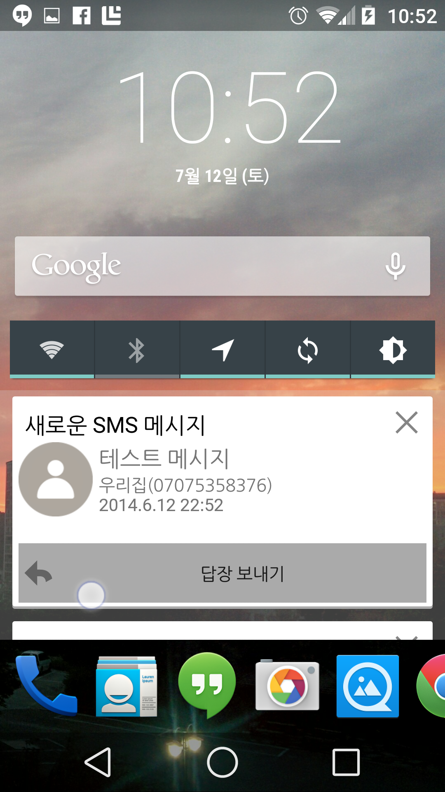
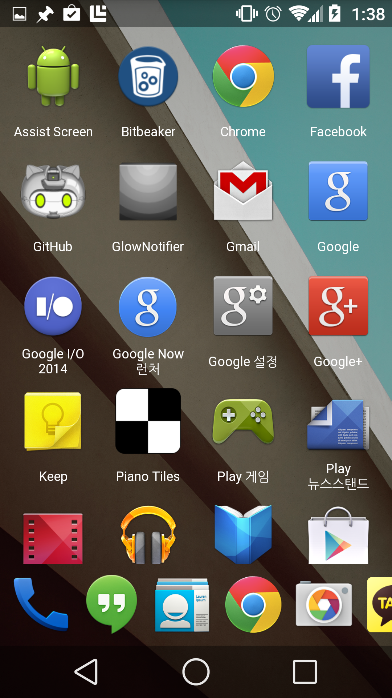

Assist Screen은 일종의 안드로이드 런처 앱 입니다. 기존 런처 앱들과 달리, 이 런처의 홈 화면은 2개로 구성되 매우 단순하며,
홈 화면에 여러분이 필요한 정보와 설정 등을 바로 보여주어, 휴대전화 사용을 더 편리하게 하는것에 초점을 맟추었습니다.


앱 테스트 해보기
Assist Screen 아직 정식 제품이 아니며, 현재 테스트 및 개선 단계를 거치고 있습니다
안정되고 개선된 멋진 정심 제품이 출시되려면 여러분들의 도움이 필요합니다. 테스트에 참여해 보세요.
테스트에 참여하고자 한다면, 구글 플러스 커뮤니티에 가입하세요. 테스트도 하고 커뮤니티에서 피드백도 하실 수 있습니다.